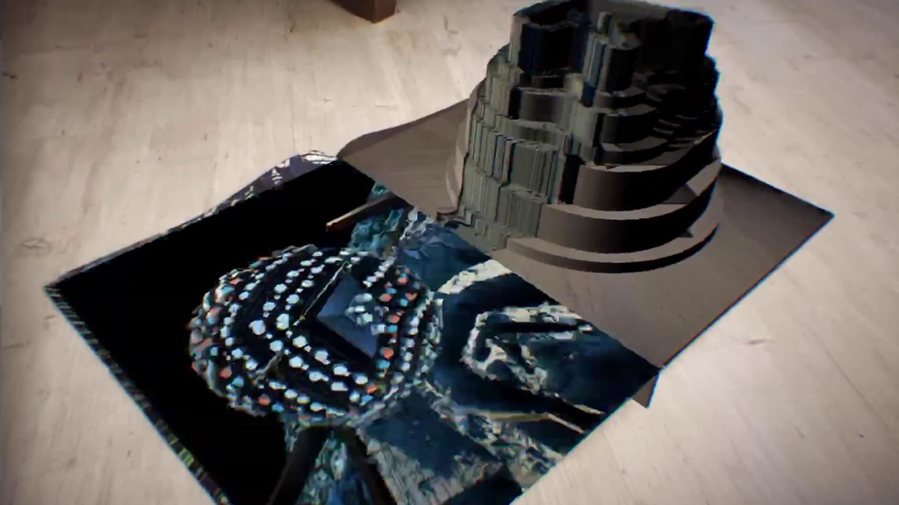
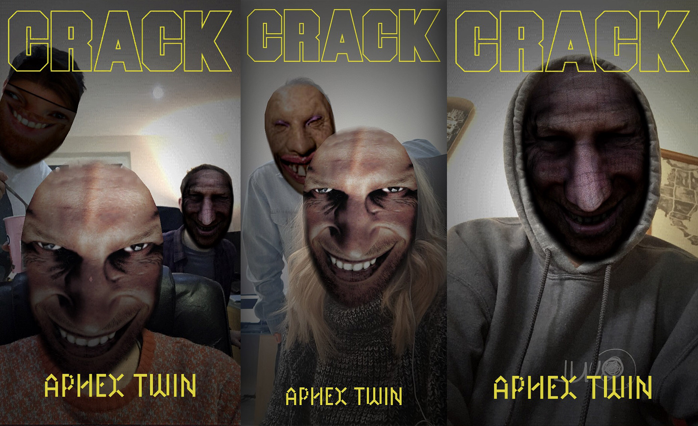

Crack Magazine x Aphex Twin // AR Experience
Created for Crack Magazine while working at Zubr
Made in Unity, with AR Kit, and Facebook Filter created in Spark AR
To mark a exclusive interview between Crack Magazine and electronic music artist Aphex Twin, we made an app to bring his weird, unique visual style to life.
Across the ten page spread, art work created by Aphex Twin’s visual partner Weird Core, could be scanned and distort and warp.
As well as working on shaders for this app, I also created a Facebook Filter to compliment the app.



